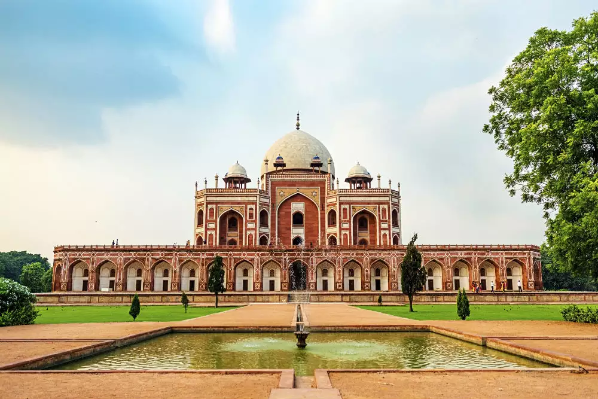
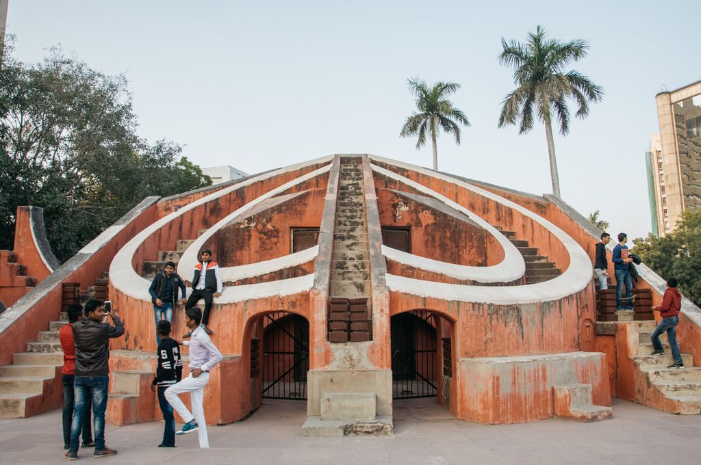
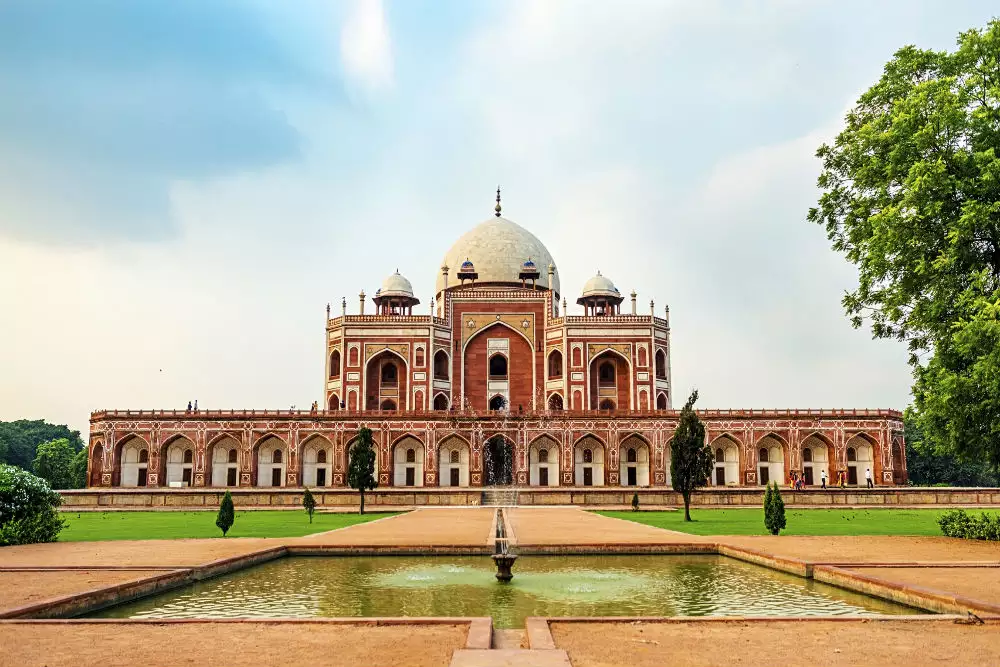
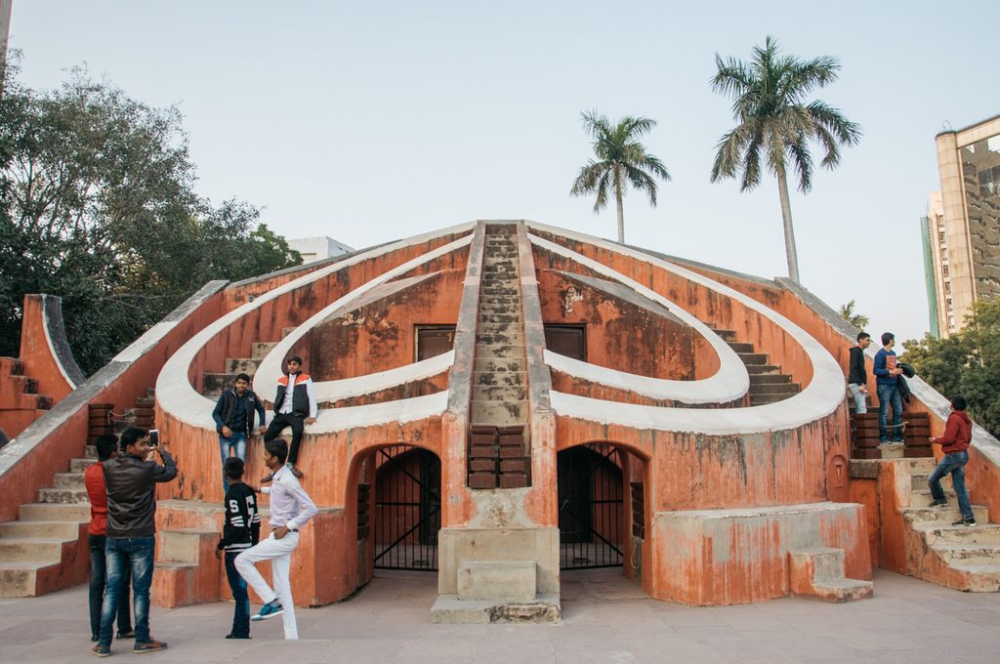

Italy : A land of Art and history
 



This 73-meter high tower was built by Qutub-ud-Din Aibak in the year 1193. Built after the defeat of Delhi’s last Hindu ruler, the Qutub Minar was constructed to celebrate the Muslim supremacy in Delhi. It is the highest tower in India, with five levels and projecting balconies. The first three levels are made up of red sandstone and the last two of marble and sandstone.
The Qutub Minar has three different types of architectural styles. The construction of the minar was started by Aibak (who only made the basement). Later, Iltutmish added on three stories and then it was completed by Firoz Shah Tuglak, who constructed the last two stories. Quwwat-us-Islam Mosque, the first mosque ever to be built in India, is situated here.
Delhi is a city with an impressive and remarkable history. Standing as a witness to this interesting bygone era are the various monuments of Delhi. From the Old Fort to the Tughlaqabad area to the various tombs in the city, each one represents a separate period in the history of Delhi.
In the area of New Delhi, historical monuments cover mostly those that were built during the time of the British like the Parliament House, President's House, the India Gate etc. However, one thing that is common in all the monuments of Delhi is their architectural excellence. Be it the Red Fort built by Shah Jahan or the Parliament House designed by Edwin Lutyens,
each and every monument has an architectural beauty that leaves you mesmerized. All said and done, the magnificence of Delhi monuments cannot be fully described and you will have to visit them to really appreciate them